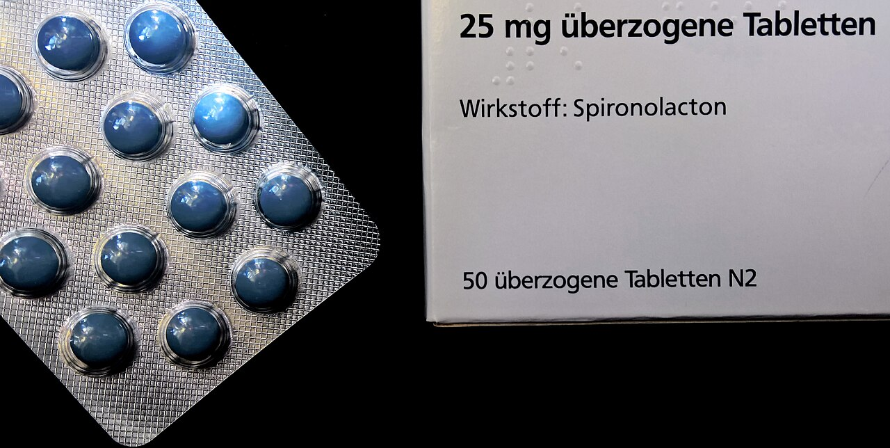

Página 7 · Síndrome pré-menstrual e síndrome disfórica pré-menstrual
Antes de escolher a droga, escolha o alvo: edema, cefaleia ou mastalgia
Ela não respondeu aos hábitos. Antes de escolher a droga, responda outra coisa: qual sintoma dela é o que atrapalha? A resposta muda a receita inteira — e há uma condição clínica que, sozinha, elimina metade das opções.
O degrau que autoriza a receita: refratário aos hábitos
O medicamento entra nos casos refratários às medidas de mudança de hábitos de vida. O degrau só sobe quando o de baixo falha — e é isso que evita medicalizar uma paciente que responderia a exercício, sal e conversa. A partir daí, a pergunta que organiza a prescrição não é "qual a droga da síndrome pré-menstrual", e sim qual sintoma-alvo domina o quadro. São três rotas, e elas correm em paralelo — quem tem edema não sobe a escada da cefaleia.
Edema, rota 1: o combinado e a estabilidade hormonal
Para o edema, a primeira rota é o anticoncepcional combinado oral, desde que a paciente não tenha contraindicação. O porquê é o que interessa: ele promove estabilidade hormonal — e, provendo essa estabilidade, há melhora dos sintomas. A formulação que a prova marca tem nome e dose: etinilestradiol 20 mcg + drospirenona 3 mg, em regime 24/4. É a única formulação combinada aprovada pelo FDA para o tratamento do transtorno disfórico pré-menstrual entre mulheres que buscam contracepção, e a escolha da progestina tem lógica: a drospirenona é antimineralocorticoide e antiandrogênica — em efeito diurético, 3 mg de drospirenona equivalem a cerca de 25 mg de espironolactona. Uma nota de honestidade intelectual que não muda o gabarito: as meta-análises não encontraram diferença de eficácia entre os tipos de progestágeno, e os combinados com drospirenona não superaram placebo de forma significativa nos sintomas de humor. A primazia da drospirenona é sobretudo regulatória (rótulo aprovado) e mecanística (antimineralocorticoide).
Edema, rota 2: espironolactona — a dose que faltava
A segunda rota do edema é a espironolactona: ela diminui os sintomas decorrentes da retenção hídrica, e a paciente melhora a distensão abdominal e o edema de extremidades. A dose que a prescrição exige e que costuma faltar: 50 a 100 mg/dia por via oral, durante a fase lútea (2 a 4 comprimidos de 25 mg), reservada aos casos com edema muito acentuado e refratário à intensificação do exercício aeróbico — a condição de entrada é exatamente o degrau anterior —, e prescrita preferencialmente pela manhã, como todo diurético. Essa é a recomendação do Ministério da Saúde nos Protocolos da Atenção Básica: Saúde das Mulheres (2016), e ela não está sozinha: o RCOG Green-top Guideline nº 48, 2ª edição (fev/2017), também recomenda a espironolactona no manejo da síndrome pré-menstrual (§6.4.2, grau C) — recomendação que entrou na revisão de 2016 e por isso não aparece em versões anteriores do documento. A assimetria merece precisão, porque ela é útil e costuma ser mal contada: a ACOG (Clinical Practice Guideline nº 7, dez/2023) não menciona a espironolactona entre suas opções terapêuticas — mas silêncio de um documento não equivale a recusa das diretrizes. E há uma ponte elegante que fecha as duas rotas do edema num fio só: segundo a FEBRASGO/Femina (2010), 3 mg de drospirenona equivalem a cerca de 25 mg de espironolactona em efeito diurético. Ou seja, o combinado com drospirenona e a espironolactona não são rotas estranhas uma à outra — atacam a mesma retenção hídrica, por vias que se encontram no mesmo bloqueio mineralocorticoide.
Cefaleia: a escada em quatro degraus, em ordem
Para a cefaleia, a lógica é de escada, e a ordem é a pegadinha. Primeiro degrau: começar sempre pelo mais básico e de menos efeitos colaterais — analgésicos comuns. Segundo degrau: em alguns casos, associar anti-inflamatórios não esteroidais. Terceiro degrau: se não houve resposta adequada, ergotamina — um alcaloide vasoconstritor, que pode ser adicionado no manejo das crises de enxaqueca não responsivas a analgésicos comuns ou anti-inflamatórios. Quarto degrau: sumatriptano, um agonista dos receptores de serotonina, para os casos de enxaqueca mais grave, nas crises agudas. A ordem, em uma linha para fixar: analgésico comum → anti-inflamatório não esteroidal → ergotamina → sumatriptano. A armadilha é pular degraus e ir direto ao triptano.
Mastalgia: só nos quadros graves
Para a mastalgia, a pré-condição é restritiva: só nos casos de maior gravidade é que se pensa em tratamento medicamentoso. A primeira opção é o agonista dopaminérgico na fase lútea — a classe tem literatura estabelecida na mastalgia cíclica grave. Nos extremos mais graves, entra o tamoxifeno. Ele fica reservado, e o motivo é preciso: a classe inteira dos agentes hormonais usados na mastalgia tem perfil de efeitos adversos que restringe o uso a pacientes selecionadas, com dor mamária grave e sustentada. Não é que o tamoxifeno seja o mais tóxico entre eles; é que nenhum deles entra de rotina. O manejo terapêutico aprofundado da mastalgia corre em tema próprio; o essencial é tratar apenas nos quadros graves, dopaminérgico na fase lútea, tamoxifeno reservado.
A trombofilia que fecha a rota hormonal
Existe uma condição que, sozinha, elimina metade das opções: a mutação do fator V de Leiden. O nome é mutação, não deficiência — trata-se de uma mutação pontual no gene F5 (G1691A, substituição Arg506Gln) que remove o sítio de clivagem da proteína C ativada no fator Va; o fator Va não é inativado, acumula-se, e a coagulação segue desinibida. É um ganho de função pró-trombótico, o oposto conceitual de uma deficiência — e a distinção morde porque deficiências de verdade existem no mesmo balcão: proteína C, proteína S e antitrombina. A herança é autossômica dominante com penetrância incompleta. A consequência prática é categórica: os critérios de elegibilidade contraceptiva (U.S. MEC 2024, alinhado ao MEC/OMS) classificam as mutações trombogênicas conhecidas como Categoria 4 para o combinado — risco inaceitável, contraindicação absoluta. Diante dessa alteração, todas as alternativas com contraceptivo combinado saem da disputa de cara, e a abordagem passa a ser o diurético, que ataca justamente os sintomas de retenção hídrica. Três complementos evitam a conclusão errada de que a paciente ficou sem opções: progestágeno isolado é Categoria 2 (benefícios em geral superam os riscos), DIU de cobre é Categoria 1 (sem restrição) e rastreio de trombofilia antes de iniciar combinado não é recomendado de rotina — a trombofilia entra pela história, não por triagem laboratorial universal.
Quando o enunciado não entrega tudo: decidir assim mesmo
O anti-inflamatório é, em princípio, cogitável em várias dessas situações, mas nunca se incentiva o uso indiscriminado — há risco de lesão aguda de mucosa e de repercussão renal; entre alternativas melhores, ele não é a escolha. E enunciado incompleto não isenta de decidir. O ideal seria que a questão informasse quais sintomas a paciente apresenta, para direcionar a escolha; quando não informa, decide-se entre as alternativas oferecidas, eliminando o que está contraindicado e escolhendo o que ataca o mecanismo mais provável. Saber que o enunciado é incompleto e ainda assim decidir é parte da técnica de prova.
Roteador por sintoma-alvo
três escadas em paraleloPré-condição: o medicamento entra nos casos refratários às mudanças de hábito.
Edema
Bloqueio: mutação do fator V de Leiden → MEC Categoria 4 → combinado contraindicado → diurético como abordagem inicial. Progestágeno isolado é Categoria 2 e DIU de cobre é Categoria 1.
Cefaleia
Regra dura: triptano e ergotamina nunca se associam, nem nas 24 horas seguintes ao uso de ergotamina.
Mastalgia
Pré-condição: só nos casos de maior gravidade
Prova × rede — as duas verdades no lugar certo
- O que a prova marca
- Etinilestradiol 20 mcg + drospirenona 3 mg (24/4) — a única formulação combinada com indicação aprovada para transtorno disfórico pré-menstrual.
- O que a rede entrega
- O Ministério da Saúde, nos Protocolos da Atenção Básica: Saúde das Mulheres (2016), prescreve etinilestradiol + levonorgestrel 0,03 mg + 0,15 mg, em uso contínuo — e o uso contínuo (em vez de cíclico) é justamente o que as fontes reforçam para reduzir a janela sintomática.
- Como conviver com as duas
- Marcar drospirenona na prova, saber que no atendimento da rede o combinado disponível é o levonorgestrel em uso contínuo, e não confundir indisponibilidade com ineficácia.
Nota de fronteira — triptano e ergótico no manejo atual
No manejo atual da crise migranosa — assunto de outro capítulo —, o triptano é o específico de escolha nas crises moderadas a graves e o ergótico perdeu espaço por tolerabilidade. A escada acima é a que cai em prova neste tema; a regra dura atravessa qualquer versão dela: triptano e ergotamina nunca se associam.

A apresentação oral corrente é o comprimido de 25 mg, e é ela que torna concreta a prescrição da rota do edema: 50 a 100 mg/dia na fase lútea correspondem a 2 a 4 comprimidos, preferencialmente pela manhã, como todo diurético. A indicação aqui é dirigida aos sintomas de retenção hídrica — distensão abdominal e edema de extremidades —, com lastro no Ministério da Saúde (Protocolos da Atenção Básica, 2016) e no RCOG Green-top nº 48, 2ª edição (fev/2017), §6.4.2, grau C. Não confundir com a drospirenona: mesma direção antimineralocorticoide, mas dentro do combinado, e com a equivalência de efeito diurético de 3 mg para cerca de 25 mg de espironolactona.
Lupus in Saxonia, "Spironolacton — 25 mg überzogene Tabletten", via Wikimedia Commons. Licenciada sob CC BY-SA 4.0; derivado mantido sob licença compatível. Fonte: Wikimedia Commons.
Quiz — fixação
Paciente de 22 anos procura a unidade de saúde com sintomas no período menstrual em todos os ciclos, desde que a menstruação se regularizou aos 15 anos. Não apresenta outras queixas, nega doenças, nega tabagismo e refere ser sedentária. Assinale a alternativa correta:
- Gabarito E. O combinado com etinilestradiol + drospirenona promove estabilidade hormonal, e é essa estabilidade que melhora os sintomas pré-menstruais — é a única formulação combinada com indicação aprovada para o transtorno disfórico (EE 20 mcg + drospirenona 3 mg, 24/4), e a paciente não tem contraindicação (nega doenças, nega tabagismo).
- A. os dados do enunciado não permitem afirmar transtorno disfórico: falta a confirmação prospectiva por diário de ≥2 ciclos e faltam dados que caracterizem disfunção psicossocial e funcional de maior gravidade — "sintomas em todos os ciclos" não é sinônimo de preencher critério.
- B. vitamina C não aparece em nenhuma das teorias fisiopatológicas; os fatores biológicos descritos são os esteroides gonadais e os neurotransmissores centrais (GABA e serotonina).
- C. inverte a conduta: se houver sintomas psíquicos de maior gravidade, os inibidores de recaptação devem ser associados, junto da psicoterapia.
- D. também inverte: mudanças de hábito melhoram os sintomas, e na síndrome pré-menstrual é por elas que se começa — a paciente, inclusive, é sedentária, o que torna a orientação ainda mais indicada.
- Por que cair na (A). a paciente é jovem, sintomática há anos e "todos os ciclos" soa como critério cumprido; o antídoto é lembrar que o transtorno disfórico exige conta de cinco, registro prospectivo e gravidade documentada — nada disso está no enunciado.
- Por que cair na (C). o enunciado não menciona sintoma psíquico dominante, e o aluno conclui que a classe "não cabe"; mas a alternativa afirma que os inibidores não devem ser utilizados, o que é falso em qualquer cenário com sintoma psíquico relevante.
Paciente com mutação do fator V de Leiden procura atendimento para tratar sintomas de síndrome pré-menstrual. A abordagem inicial mais adequada é:
- Gabarito D. O diurético melhora os sintomas característicos de retenção hídrica — distensão abdominal e edema de extremidades — e é a melhor opção disponível para essa paciente, com a espironolactona 50-100 mg/dia na fase lútea, pela manhã, como escolha concreta.
- A. cai de cara: a mutação do fator V de Leiden é mutação trombogênica conhecida, classificada como Categoria 4 para contraceptivo combinado — contraindicação absoluta.
- B. cai junto com a (A): o fato de a formulação conter drospirenona não muda nada, porque o problema é o componente estrogênico e o risco trombótico, não a progestina.
- C. é cogitável em princípio, mas nunca se incentiva o uso indiscriminado de anti-inflamatório: há risco de lesão aguda de mucosa e de repercussão renal — entre as alternativas oferecidas, não é a melhor.
- Por que cair na (B). o aluno lembra que "drospirenona é a pérola dos sintomas pré-menstruais" e marca a alternativa mais sofisticada da lista, ignorando que a contraindicação vem antes da preferência — primeiro se elimina o que não pode, depois se escolhe entre o que resta.
- Leitura crítica do enunciado. o ideal seria a questão informar quais sintomas a paciente apresenta; ela não informa, e ainda assim se decide — eliminando o bloco contraindicado e escolhendo o que ataca o mecanismo mais provável. E o complemento que evita o erro oposto: essa paciente não ficou sem contracepção — progestágeno isolado é Categoria 2 e DIU de cobre é Categoria 1.
Nenhuma dessas rotas serve quando o que atrapalha não é o corpo, e sim a mente. Aí entra a única classe com eficácia comprovada — e ela pode ser dada o mês inteiro ou só na metade do ciclo que dói.